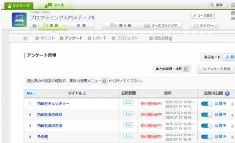
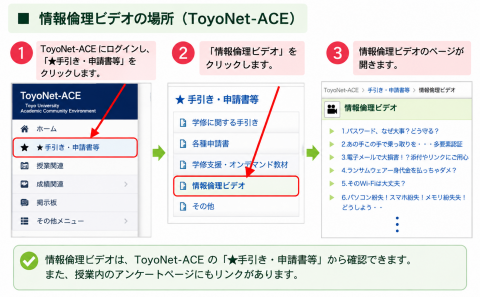

学年度
2026年度 学年歴
シラバス
講義日程
指導方法
本授業では、講義用ウェブページを中心教材として使用します。あわせて、テキスト（教科書）およびビデオ教材も使用します。
本授業はオンデマンド形式で実施します。毎週水曜日に教材・課題等を配信し、学生は講義用ウェブページ、教科書、ビデオ教材を確認したうえで、指定された課題や確認クイズに取り組みます。
質問や双方向の連絡には、主にSlackを使用します。
各回の課題は、授業内容の理解状況を確認するために提出するものです。課題は原則として翌週の金曜日までに提出してください。内容を確認し、必要に応じて全体への注意・補足説明を行います。また、個別に修正が必要な場合には、ToyoNet-ACE等を通じて連絡します。
やむを得ず金曜日までに提出できなかった場合でも、次回授業の前日まで提出できます。提出先を設定します。各回の課題について指摘を受けた箇所や、全体への注意で示された箇所は、その後の課題やスキルチェックに反映できるよう、各自で確認・修正してください。
授業後は、各回に学んだことの要点をノートにまとめ、次に必要になった場合に速やかに思い出せるよう工夫しましょう。
成績評価の方法・基準
東洋大学成績評価基準に準拠します。
| 評価項目 | 割合 |
|---|---|
| 情報社会と情報倫理に関する課題 | 10% |
| スキルチェック | 20% |
| クイズ | 10% |
| 課題 | 60% |
課題について
各回の課題は、授業内容の理解状況を確認し、その後の学習につなげるためのものです。指摘を受けた箇所や全体への注意で示された箇所は、後の課題やスキルチェックに反映できるよう各自で確認・修正してください。
スキルチェックについて
習得すべき最低限の内容を確認します。スキルチェックを受験しなかった場合、著しく低い得点しか得られなかった場合、他の評価項目の合計が60%に達していても不合格とする場合があります。やむを得ない事情により指定期間に受験できない場合には、必要に応じて予備期間を設けて対応します。
用意するもの
教科書
「スラスラ読める Pythonふりがなプログラミング 増補改訂版（ふりがなプログラミングシリーズ）」
リブロワークス（著）、株式会社ビープラウド（監修）、インプレス（出版社）
型式は以下のいずれでも構いません。受講人数が予測できなかったため、生協には注文してありません。
- PDF版をダウンロードして購入
- Kindle版を購入
- 書籍を注文して購入（ISBN: 978-4-295-01174-3）
どの形式を選択するかは自由です。自分の持っているデバイスや好みで選んでください。型式ごとにどのような違いがあるか知りたい場合は、初回授業後に購入しても構いません。慣れている形式のものをおすすめします。
教科書をどのように利用するか
講義中に次回までに読んでくる範囲を指示します。次の授業の際に理解度チェッククイズを出題します。この時は手元に点数が出ますが、結果は収拾されません。授業最終回に、それまで出題された問題をランダムに出題するチェックを行います。この時の点数は収拾され、スキルチェックの点数とともに評価の対象となります。
マイク付きイヤホン
講義内でビデオ教材閲覧の指示があります。各自の端末にイヤホンを接続して説明を聞く場合があります。また、画面を示しながら質問したい場合にはマイクも必要になります。
教員への質問方法
Slackは、ファイルや画像を添付しながら質問できるコミュニケーションツールです。
チャンネル #板書 には、教員から学生への伝達事項を掲載します。
個別の質問は、教員宛てのDM（ダイレクトメッセージ）を使用します。初回講義までにワークスペースへ参加し、自分のプロフィールの氏名設定を済ませてください。
@toyo.jpのGoogleアカウントに入った状態で使用してください。
- Slackマニュアル
- Slackワークスペース：ToyoNet-ACE ＞ コースコンテンツ ＞ ガイダンスで参照
- Slack招待リンク：ToyoNet-ACE ＞ コースコンテンツ ＞ ガイダンスで参照
DMの送り方や、プロフィールを添付してDMを送る場合の方法をマニュアルで確認しておきましょう。
課外実習課題
提出締め切り：2026年12月25日（金）
4つのカテゴリー（情報セキュリティ、情報社会の権利、情報社会の生活、その他）のビデオ教材を閲覧し、それぞれの要点をまとめる。


参考サイト
- Python公式ドキュメント：Python Documentation
- いまにゅのプログラミング塾：Python入門シリーズ
- W3Schools Python Tutorial
- 「Python早見帳」 岡崎直観 著